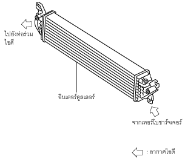

อินเตอร์คูลเลอร์ [SKYACTIV-D 2.2]
id0113z7706800
จุดประสงค์/การทำงาน
• ระบายความร้อนอากาศเข้าซึ่งถูกอัดและมีความร้อนจากเทอร์โบชาร์จเจอร์
โครงสร้าง
• อินเตอร์คูลเลอร์จะติดตั้งอยู่ที่ด้านหลังของกันชนหน้า
ac5wzn00002218
การทำงาน
• อินเตอร์คูลเลอร์จะระบายความร้อนอากาศเข้าซึ่งถูกอัดและมีความร้อนจากเทอร์โบชาร์จเจอร์เพื่อให้ไอดีมีความหนาแน่นของอากาศเพิ่มขึ้น

ac5wzn00002219